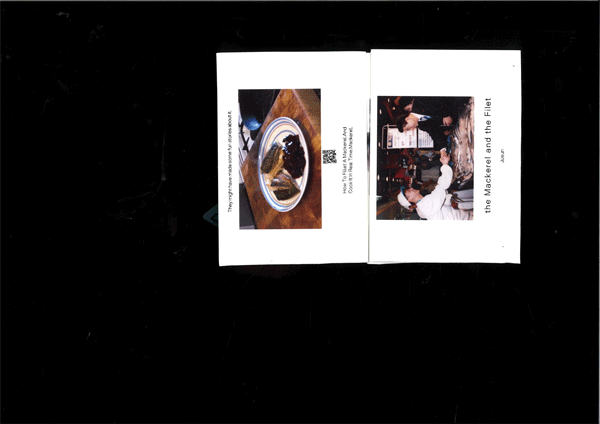

Zine about Mackerel
프로젝트의 핵심 콘셉트와 연구 배경을 적는 공간입니다. 이 텍스트는 가독성을 위해 우리가 설정한 적당한 폭 안에서 줄바꿈되도록 제어할 것입니다.
여기에 추가적인 세부 설명이나 프로세스 아카이브 과정을 덧붙일 수 있습니다.

프로젝트의 핵심 콘셉트와 연구 배경을 적는 공간입니다. 이 텍스트는 가독성을 위해 우리가 설정한 적당한 폭 안에서 줄바꿈되도록 제어할 것입니다.
여기에 추가적인 세부 설명이나 프로세스 아카이브 과정을 덧붙일 수 있습니다.
